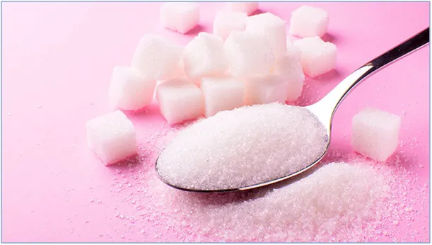

Nie ma żadnego znaczenia czy cukier kosztuje 4 zł czy 10 zł.
Globalny rynek cukru w 2022 to 183 mln ton i jest to o 0,7 % mniej niż w sezonie poprzednim, czyli tyle samo. Oznacza to, że przy wzroście cen i spadku popytu zostałoby tego towaru więcej niż na rezerwy, ale generowana panika pozwoli wypchnąć stary towar z magazynów.
Mechanizm jest banalnie prosty, w okresie robienia przetworów, cukier jako naturalny środek konserwujący jest niezbędny, aby zachować to, co cenne w owocach na zimowe wieczory. Mamy i babcie w trosce o swoich bliskich są w stanie zapłacić za drogi cukier, aby witaminowe skarby nie przepadły w środku lata. Jemy bardzo dużo cukru, wielokrotnie za dużo. Gdyby to były tylko te przetwory... Cole, soki, batoniki, napoje, itp. "eliksiry" płyną szeroką rzeką do milionów żołądków. Do tego siedzący tryb życia i skutki widać gołym okiem. Nigdy w Polsce nie widziałem tylu nastolatków z nadwagą, co w tym roku. Znałem to z Niemiec, Anglii itp., ale u nas to pierwszy sezon. Dzieci rosną szybko, a ostatnio bardziej w szerz niż wzdłuż. Z roku na rok będzie im coraz trudniej zmienić nawyki. Dorośli mają podobny problem, wszytko drożeje, sięgamy po coraz gorsze jedzenie. Olbrzymie podatki na sektor zdrowia nic tu nie pomogą, musimy być przezorni i unikać "białej śmierci".

Cukru w naszej diecie powinno być ok. 50 gram na dobę. Tak to jest 1/20 kilogramowej torebki. Nie ma więc znaczenia, czy cukier kosztuje 4 zł czy 10 zł bo dzienny wydatek to kwota od 20 do 50 groszy na osobę. To znacznie mniej niż często wydajemy na torby w marketach.
Panika napędzana w mediach pozwoli sprzedać zapasy przed kolejnymi zbiorami. Owoce można zamrozić i cukru nie kupować.
Zdrowia życzę!
Źródła: www.ragus.co.uk/global-sugar-market-report-february-2022
Paweł Klimczewski